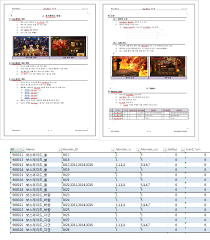

보스 레이드
- 속성별 전담 보스
- 난이도별 보상 체계
- 친구 캐릭터 사용 시스템
06 · COLLECTIBLE RPG
속성별 캐릭터의 활용 이유를 만드는 보스 레이드와 성장 재료의 목적지를 구분하는 파밍 던전을 기획했습니다.

보유한 캐릭터를 어디에서 활용해야 하는지 분명하지 않으면 수집과 성장의 목적이 약해질 수 있습니다. 속성별 전담 보스를 두고 해당 속성 캐릭터의 강점이 드러나는 전투와 난이도별 보상을 구성했습니다.
솔로 플레이의 진입 부담을 낮추기 위해 친구 캐릭터를 사용할 수 있는 시스템을 함께 적용해, 보유 캐릭터와 외부 도움을 조합해 도전할 수 있도록 했습니다.

속성별 캐릭터의 활용처를 명확하게 만들고, 친구 캐릭터를 이용해 도전을 시작할 수 있는 구조를 제공하는 것이 목표였습니다.